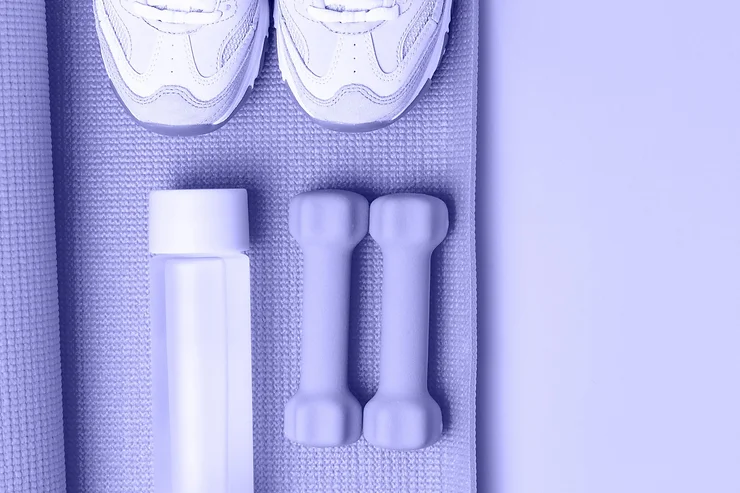

Primeiro parágrafo do meu site.
Vou me esforçar bastante!
Preciso focar mais em:

Preciso me dedicar, usar de soft-skill para administrar meus horários.
Aprender a controlar o TDAH

Praticar atividade física e me alimentar melhor
